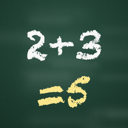

Chalk Math
Handwriting math practice, Kindergarten to Grade 9
Chalk Math turns your iPhone into a chalkboard. Read the question, write your answer with your finger or Apple Pencil, and Chalk Math reads your handwriting and checks it instantly.
Eight levels
- Kindergarten — make 5 and 10
- Grade 1 — add and subtract to 20
- Grade 2 — fast facts and adding tens
- Grade 3 — sums to 100, times 2, 5 and 10
- Grade 4 — times tables and division facts
- Grade 5 — two-digit multiplication and division
- Grade 6 — order of operations and percents
- Grades 8–9 — powers, roots and exponents
Made for families
No ads, no accounts, and no data collected. The first three levels are free, and one purchase unlocks everything — no subscription.